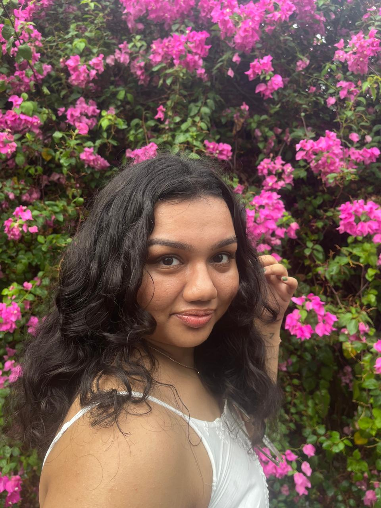

about
It’s a treat to meet you. Since you’ve made it this far, I already consider us kindred spirits in the world of aesthetics.
I’m a designer who finds art in the quiet, often overlooked corners of everyday life — the way shadows fall during a morning commute, or the unexpected typography on a weathered ticket stub. I’m constantly observing, collecting, and translating these moments into something visual.
To me, design is a universal language — a way to communicate, connect, and resonate without needing words.
I’m especially drawn to brand identity and visual storytelling. I love how a strong visual system acts like a lighthouse — attracting people who share similar values and sensibilities.
With a background in Communication Design, I approach my work with both structure and sensitivity.
Outside of design, I find inspiration in familiar comforts — rom-coms, 2000s music, slow mornings, and a good bowl of white sauce pasta.